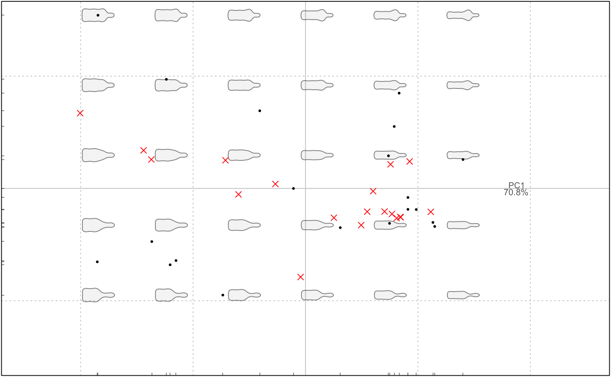

Basically reapply rotation to a new Coe object.
rePCA(PCA, Coe)
Arguments
| PCA | a PCA object |
|---|---|
| Coe | a Coe object |
Note
Quite experimental. Dimensions of the matrices and methods must match.
Examples
b <- filter(bot, type=="beer") w <- filter(bot, type=="whisky") bf <- efourier(b, 8) #> 'norm=TRUE' is used and this may be troublesome. See ?efourier bp <- PCA(bf) wf <- efourier(w, 8) #> 'norm=TRUE' is used and this may be troublesome. See ?efourier # and we use the "beer" PCA on the whisky coefficients wp <- rePCA(bp, wf) plot(wp) #> will be deprecated soon, see ?plot_PCAplot(bp, eig=FALSE) #> will be deprecated soon, see ?plot_PCA points(wp$x[, 1:2], col="red", pch=4) 